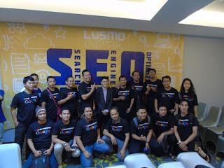

Siapakah Master SEO, Ahli dan Spesialis SEO di Banjar?? Kalian pasti seringkali penasaran dengan pertanyaan tersebut sekiranya anda telah lama menggeluti dunia blogger, situs. Mengapa? Karena dalam dunia blogger dan situs itu tidak akan terlepas dalam Ilmu SEO, ilmu yang menghasilkan apa yang kita posting di Seacrh Engine muncul berada di halaman teratas Google. Tidak seharusnya halaman satu google, melainkan telah dapat muncul di 10 besar halaman google pun itu tandanya artikel kita sudah terdapat teknik-teknik SEO di dalamnya, sehingga Google akan memberikan peringkat untuk postingan kita. Dalam dunia blogger atau website, Ilmu SEO identik pun mungkin memang diterapkan untuk mencari traffic kunjungan yang banyak dan tertarget. Tetapi sekiranya anda mau piawai dan Pakar SEO, anda harus mulai bersabar belajar sedikit demi sedikit dari hal dasar SEO sampai teknik-teknik SEO lainnya.
Pembukaan diatas adalah permulaan dari pembahasan Syamsul Alam Master SEO, Ahli dan Spesialis SEO di Banjar, sebenarnya dari mulai internet marketing tersebar dan marak di Banjar, sudah banyak bermunculan pakar-spesialis SEO Banjar. Anda akan bisa dengan mudah menemukan Spesialis SEO, Ahli SEO Spesialis Master SEO Banjar ketika anda membeli layanan jasa SEO untuk laman anda. Pasti yang menyediakan layanan hal yang demikian bukan orang abal-abal, mereka seluruh sudah berlatih hari demi hari sehingga berani mendirikan layanan jasa seo untuk mempermudah kalian yang masih sulit untuk memahami dan menggunakan Ilmu SEO pada kios online atau situs anda. Namun dengan begitu, anda juga harus konsisten teliti ketika berkeinginan memilh Jasa SEO, sebab jasa SEO yang benar-benar ampuh yaitu dia yang menjanjikan uang anda kembali seandainya tulisan yang dia optimasi tak muncul dihalaman 5 Google.
Nah kini saya akan lebih dalam memberikan berita seputar Master SEO, Ahli dan Spesialis SEO di Banjar. Ketika anda mengetikkan keywords “Master SEO Banjar” “Pakar SEO Banjar” atau “Pakar SEO Banjar”, siapakah halaman teratas yang anda temui? Coba pahami dan lihat, dialah pakar-ahli yang memang telah spesialis dibidang SEO secara khusus di negara Banjar ini. Disitu terdapat website syamsul alam. Dari analisa hal yang demikian sekarang anda telah bisa mulai berfikir kepada siapa anda berkeinginan mengawali belajar SEO lebih dalam, jangan hingga anda belajar Ilmu SEO dengan orang yang salah, karena akan buang-buang waktu anda.
Siapa Master SEO, Ahli dan Pakar SEO di Banjar?

Ilmu SEO itu tidak sejenak untuk bisa mantap dalam menguasainya, dari pengalaman salah satu Master SEO Banjar adalah Syamsul Alam dengan websitenya Syamsulalam.net, beliau sudah kesana kemari meniru seminar seputar SEO, dan hasilnya dia bisa mengumpulkan informasi-info yang membuatnya bisa menjadi Spesialis SEO Banjar. Begitupun dengan kalian yang berharap memulai belajar menjadi Ahlinya SEO atau hingga dapat membuka jasa SEO Banjar, anda harus bisa memulai dari hal yang gampang sampai kesudahannya pandai dalam optimasi nya. Sulitkah? menurut saya tidak, sebab apa? Prinsip aku merupakan apa saja yang kita inginkan ketika kita menjalani nya dengan sungguh-sungguh, karenanya hasil kerjaan sungguh-sungguh kita tak akan menghianati kita. Teruslah belajar dan belajar supaya dapat menjadi apa yang kalian inginkan.
Apa saja Hal Penting Dalam SEO ??
Pejwan Kata Kunci Hal Penting Dalam Seo
Dalam ilmu SEO intinya terdapat 2 kunci utama yang tidak akan sirna fungsi dan perannya, pun akan senantiasa kita gunakan terus menerus dalam optimasi tulisan kita. Apakah 2 hal SEO tersebut?? Berkualitas Seo On Page dan Seo Off Page. Nah dari inti kedua hal yang demikian bisa di pecah kembali menjadi beberapa bagian. Untuk pecahan dari SEO On Page diantaranya ialah :
- Keywords utama
- Keywords Laman
- Isi Konten Lazim dan Original
- Penempatan Keywords pada atribut postingan seperti Tittle, Permalink, Image, dan lain lain
- Settingan Blog atau Saya
- Template SEO Friendly
- Dan lain-lain
Nah meski untuk pecahan SEO Off Page nya adalah Pakar kita menyebutnya dengan Backlink, Backlink ini patut dari situs-web yang berkwalitas baik, supaya website atau blog anda bisa turut menonjol baik oleh mesin pencari. BACKLINK ini berfungsi sebagai pendukung tulisan anda agar dapat sedikit demi sedikit merangkak naik ke halaman pertama Google. Pakar tidak akan membahas perihal SEO lengkap disini, sebab di postingan ini aku hanya akan memberikan isu mengenai Master SEO, Ahli SEO Syamsul Alam di Banjar.
Lalu apakah penulis sendiri termasuk dalam Ahli SEO Banjar??
Sebelumnya penulis mohon maaf tidak dapat mengakui pertanyaan tersebut, biarlah hasil yang akan menjawab pertanyaan tersebut. Kelompok artikel yang penulis buat untuk menggeser posisi lawan sudah dapat memberikan jawaban untuk kalian apakah saya termasuk Spesialis SEO, Ahli SEO Syamsul Alam di Banjar. Kalian bisa memperhatikan tulisan dan situs siapa yang menduduki Halaman satu google. Anda dapat cek dengan kata kunci “Halaman satu Google”, “Halaman Satu Di Google”, “Rahasia Halaman Pertama Google”, dan lihat akhirnya, Untuk kata kunci halaman satu google, penulis bisa menggeser posisi salah satu master SEO Banjar Syamsul Alam, untuk kata kunci halaman satu di google, penulis berada di posisi 2 halaman google, dan untuk kata kunci rahasia halaman pertama google, penulis berada diposisi 3 halaman google dibawah webnya paduamim dan banjarwangi, situasi hal yang demikian akan berbeda-beda dan terus bersaing siapa yang dapat menempati posisi teratas google.
Dengan pengetahuan baru anda ini, penulis telah bisa memberitahu terhadap anda siapa Master SEO, Ahli dan Pakar SEO di Banjar dan bagaimana sistem menemukannya untuk anda sebagai pembelajaran kedepan agar terus menjadi lebih baik lagi. Dari pakar-ahli yang telah penulis terangkan metode mengetahuinya, anda bisa menggunakan jasa atau bantuannya dalam opmasi laman anda, apalagi bila anda mempunyai kios online, pasti akan sungguh-sungguh menolong bila dapat akrab dengan orang-orang yang spesialis dalam ilmu SEO. Jadikan artikel share penulis ini sebagai acuan dan acuan untuk anda agar bisa terus berkarya untuk negara tercinta kita Banjar. terasa sudah cukup lama penulis membikin tulisan ini, penulis mau mengakiri dahulu sharing kali ini. Dari penulis semoga anda yang membaca artikel ini sukses senantiasa, konsisten semangat mencetak karya untuk Banjar, saya Syamsul Alam mengakhiri info kali ini mengenai Syamsul Alam Master SEO, Spesialis dan Ahli SEO di Banjar, semoga kabar ini dapat terus bermanfaat untuk anda segala. Salam .
Resources Link:
- http://www.wseeker.com/pakar-seo-banjar/
- http://www.freebsd-howto.com/1999/09/23/jasa-seo-metro/
- http://www.iosa.web.id/uncategorized/jasa-online-reputation-management-syamsul-alam/
- https://aisyahquintae.wordpress.com/2015/03/14/konsultan-pemasaran-syamsul-alam/
- https://medium.com/@heaths01/pelatihan-seo-murah-syamsul-alam-0812-3383-8173-97793ae4fb3e
- http://www.golkar.or.id/content/ahli-pakar-seo-syamsul-alam